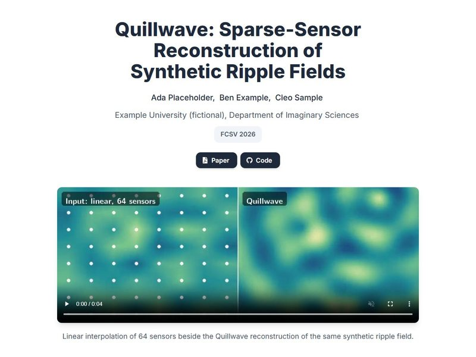
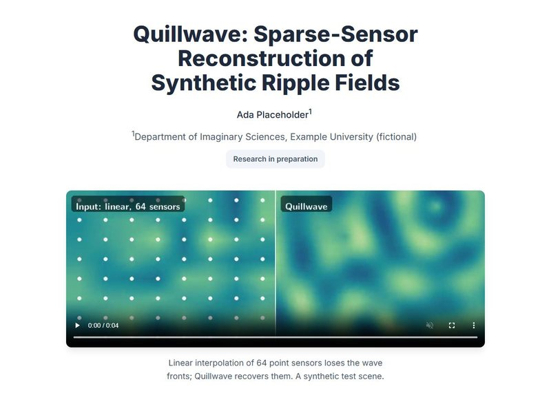
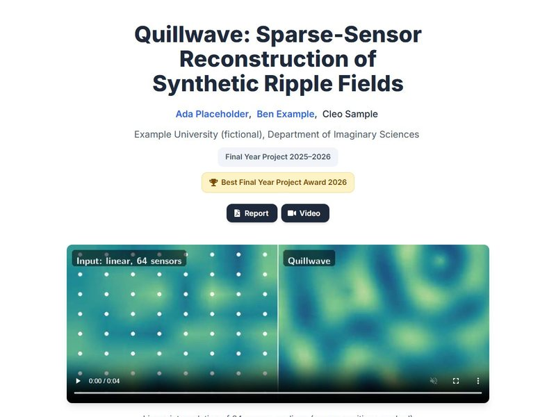

Your paper, figures and videos, as a checked project page
Point your coding agent at a folder of project materials. It builds a responsive project page in the style of the Academic Project Page Template and Nerfies, then checks it in a real browser before handing it back.
npx skills add royh1122/academic-project-page-skill
Tested with Claude Code. Needs Python 3, Node 22+, Chrome or Edge, and ffmpeg.
What it adds to the template
The page builds on the Academic Project Page Template. The skill adds the parts a template can't do.
-
It does not invent
Venues, awards, links and metrics appear only when your sources verify them. A finalist is not an award.
-
It checks reused claims
Caption text from the paper is compared with the data, and claims the data contradicts are dropped.
-
It keeps personal data off
Names, IDs and plates in raw files and video frames stay out of the page.
-
It checks its own work
A browser audit, an interaction check, every number against your sources, and screenshots at three widths.
Three live demos
Each page was built in one run of the skill, with no edits afterwards.
-

Accepted at a venueAccepted paper
Every link a published paper has: paper, code, video, poster and results.
-

Not yet releasedResearch in preparation
No public links, and nothing invented to fill the gap. Personal data in the raw files stays out.
-

Verified awardFinal-year project
A student project with an award the letter confirms, a report and an explainer video.
The projects, people, institutions and results in the demos are fictional (the “Quillwave” example kit).
Try it on your project
Install it, put your materials in a folder, and ask for a project page in one prompt.
npx skills add royh1122/academic-project-page-skill